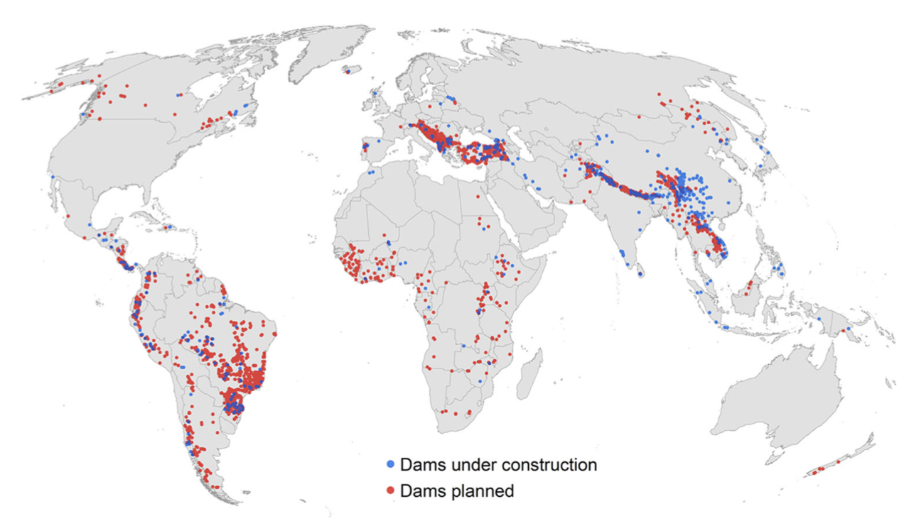
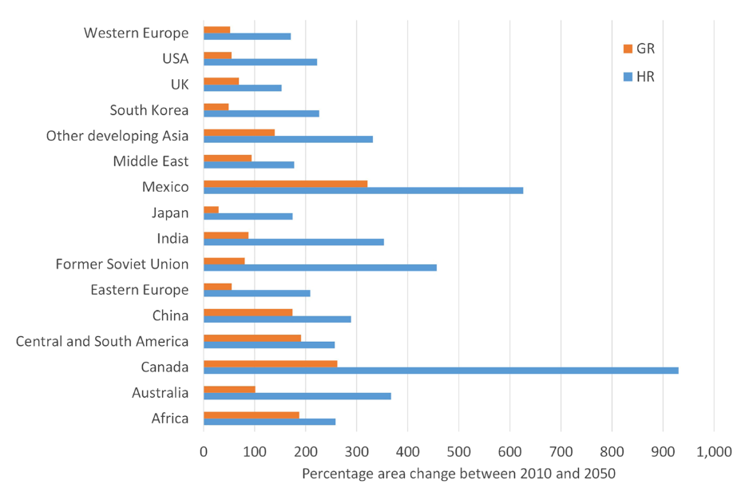
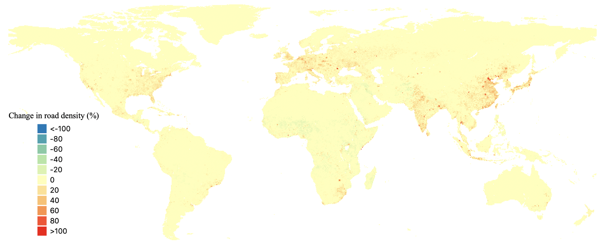

In this lecture, we will look at the different ways to predict future infrastructure developments, including the spatial patterns of development. Using a number of case studies, we showcase how combined climate and infrastructure scenarios can inform future risk and demonstrate the need to embed resilience into development projects.
In this lecture, we will discuss several ways to predict future infrastructure needs, both in terms of expansion of existing infrastructure systems and the construction of new infrastructure assets. Moreover, we will discuss how to predict the greatest need for new infrastructure.
As mentioned, the approach to predicting future infrastructure needs depends on the type of infrastructure, their underlying drivers of growth and the time scale considered for the prediction. When considering the near-future projection of large-scale infrastructure projects (e.g. hydropower dams) with long lifetimes, infrastructure expansion plans are commonly already available. However, when looking at more local infrastructure expansions (e.g. roads) and longer lifetimes, predictive modelling frameworks are more useful.
These infrastructure projections can be combined with the existing or future hazard information to understand the changes in exposure and risk of asset damages, and the changes in the disruption of infrastructure services to society. We will consider four cases:
Very large infrastructure projects often need years to plan and execute. Therefore, for the near future (next 10-20 years), databases of planned projects often exist or can be assembled. The construction of hydropower dams is a good example of this. Hydropower is a renewable energy resource and constitutes 80% of the global renewable energy production. At the same time, only 22% of the world’s technologically feasible hydropower potential is exploited (Zarfl et al. 2015). Zarfl et al. (2015) constructed a database of all planned and currently-under-construction hydropower dams from a large variety of sources. This database provides an initial estimate of the future hotspots in hydropower development. All current-build and planned projects are included in Figure 13.2.1. One can see a large number of planned dams in South America, the Himalayas, the Mekong Basin, Turkey and the Balkan region. Most ongoing projects are happening in Asia, in particular China. In total, these 3,700 hydropower dams (>1 MW) will double the global hydropower capacity in the next 10-20 years. These hydropower projects can be overlaid with hazard information to derive insights into whether developments are happening in hazard-prone areas or not. For instance, Conway et al. (2017) evaluated hydropower supply disruptions of current and future dam projects in eastern and southern Africa, showing that dam development is taking place in areas prone to simultaneous drought conditions. Performing such risk analysis will help understand the risk of future service disruptions and identify potential mitigation strategies.

Figure 13.2.1: The location of dams currently under construction and planned (Zarfl et al. 2015)
For longer term time scales (2050-2100), the need for additional infrastructure is often based on scenarios. For instance, demand for port infrastructure is determined by changes in future trade, which are driven by changes in population and economic activity.
For instance, projections suggest that maritime freight flows may triple in volume by 2050 (ITF 2019). As a result, port capacity will not be adequate to meet demand as early as 2030. This timeframe coincides with the expected sea-level rise (SLR) that requires ports to raise their land areas. In a recent study (Hanson and Nicholls 2020), future maritime trade scenarios were used to predict the necessary increase in port areas to meet this trade demand for 2050 and adapt to SLR. Two trade scenarios were considered: a mitigated future (green future + low SLR) and an unmitigated future (fossil-fuel intensive future + high SLR).
Empirical formulas were used that estimate the port area required based on the trade demand and a number of operational characteristics of ports. The global need for port areas would increase from 1,364 km2 to somewhere between 2,500-5,000 km2. As can be seen from Figure 13.2.2, the largest increases are expected in Mexico, Russia, Canada and India. For 2050, the costs associated with this construction are entirely driven by the need for new port areas (not elevating ports because of SLR), a finding that is consistent between two scenarios considered. However, for 2100, the adaptation costs are becoming much higher for the unmitigated scenario, although are still small relative to the construction costs.

Figure 13.2.2: The percentage change in port areas between 2010 and 2050 for two scenarios (GR - mitigated; HR - unmitigated) (Hanson and Nicholls 2020)
In the previous section, we saw that projections of future infrastructure can vary considerably from country to country. However, even within countries, the need for infrastructure expansion might differ. Therefore, for infrastructure types that cover the whole country, such as roads, we are interested in the prediction of the spatial pattern of infrastructure development.
In this example, we show how to predict future road expansion based on the aforementioned Shared Socio-economic Pathway (SSP) scenarios (mini-lecture 13.1). One study already predicted that total length of roads globally will increase by 14-23%, depending on the SSP scenario (Meijer et al. 2018). They do not show where road expansion will happen. Therefore, we construct a simple grid-based regression model that predicts the road density in a grid cell using the population, the degree of urbanisation and the local GDP in that grid cell. We use a general additive model, because it allows non-linear relationships, which in this case, might reflect the need for road expansion depending on the development status. We use this model to predict the future road expansion for 2050 for the SSP4 scenario, as shown in Figure 13.2.3. A large increase in roads is predicted in China, India and parts of Europe, in line with the changes in population and urbanisation we saw for the SSP scenarios. A lot of new road development will take place along the coast (e.g. China and Japan), and hence it is important to factor in increasing risk from climate change for these road development projects.

Figure 13.2.3: The change in future road density per grid cell for 2050 (compared to 2010) under the SSP4 scenario
These future scenarios can also help to understand the future use of infrastructure and the changes in risk if infrastructure is disrupted. In a transport risk analysis for Tanzania (Pant et al. 2018), this type of analysis was performed. Apart from setting up a multi-modal transport model for the present situation (Lecture 9), a future transport scenario for 2030 was generated that includes: (1) change in freight flows due to economic growth (5-9%), and (2) upgrading of existing infrastructure assets (unpaved to paved roads), increasing the capacity of the system. This future transport network was combined with future climate hazard information (fluvial and pluvial flooding).
The combined effect leads to some very large freight flow increases in the national transport network. The main highway system, for instance, is predicted to increase freight volume by 22-27% annually, while some inland ports in Tanzania will experience 11-19% increase in trade. An example of the current and future trade flows for the national road network is shown in Figure 12.2.4 (note the different legends).
The potential impacts of disruptions will also increase. For instance, failures of some important road sections will increase the losses from disruptions by a factor of three. Therefore, to manage risk, the infrastructure needs to be upgraded to be less vulnerable to the impacts of disruptions, or additional mitigation measures need to be taken, such as rerouting options or fast recovery and repair of affected infrastructure.
Figure 13.2.4: Changes in future road use as a result of economic growth and infrastructure upgrades for 2030 (right) relative to 2016 (left) (Pant et al. 2018)
In this lecture we have discussed the different ways future socio-economic scenarios can inform projections of infrastructure needs. However, it is important to note that new infrastructure development also means more infrastructure potentially at risk, and increased resilience needs to be embedded into new infrastructure development projects.